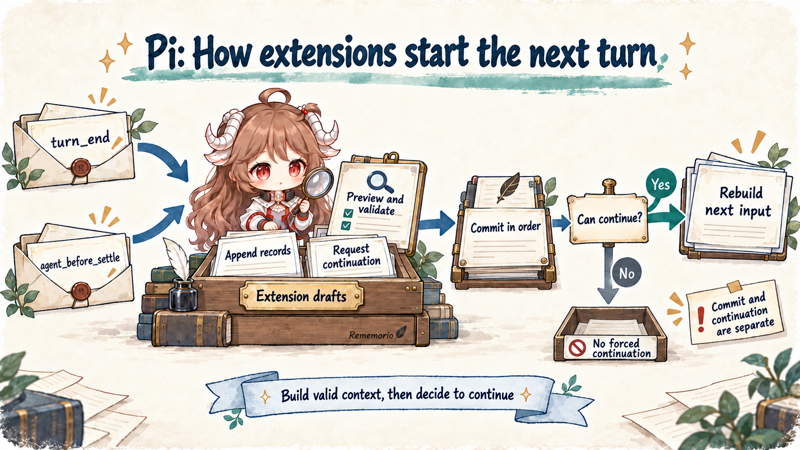

Reading contract: follow one task—repair configuration loading and run the tests—across stored records, the active branch, and the next model request. This chapter asks which changes survive resume, what compaction reads, and how an extension actually requests more work. The Pi overview introduces the loop and session tree.
The source baseline is Pi 1.0.0. This chapter follows the local AgentSession and JSONL session path. It does not describe the experimental pi-durable package, the source-only client/server path or provider-internal cache implementation. The logs and records below are simplified teaching examples, not benchmark results.
1. One long log has three different destinations
The agent reads configuration, edits the implementation, and runs tests. The test log is large, but only a few lines explain the failure. A user may need the complete output later; the next model request needs the failing assertion, its location, and the current change. Overwriting stored history to save tokens destroys evidence. Resending every line on every request spends the working context on repeated output.
Pi separates those needs. The session keeps recording what happened, while the runtime assembles model input before each request. Give the records short names so the same log can be followed through editing, branching, resume, and compaction:
U1: repair configuration loading; preserve the public API
A1: assistant requests tests, toolCallId = test-1
T1: the long result of test-1
A2: assistant explains the failure and prepares a repair
E1: replace T1’s contribution to future requests with a short summaryTwo identities matter. T1 is a session entry ID, which an edit targets. test-1 is a tool-call ID, which the model protocol uses to correlate the call and its result. They are not interchangeable. The rest of the chapter follows T1 without changing examples at each mechanism.
| Representation | What it contains here | Consumer |
|---|---|---|
| Raw session records | U1, A1, T1, A2, and the subsequently appended E1. E1 does not rewrite T1. | Storage, UI, exports, and investigation. |
| Active branch | The path from the current leaf through parentId to the root. | Tree navigation, forks, and path reconstruction. |
| Next model input | The selected compaction range, content edits, and request-time transforms. | The provider request. |

2. Record the edit to recover the same decision
2.1 Keep result identity while replacing content
A ContextEditEntry names a target entry and a replacement decision. replacement: null omits the target message; a non-null replacement changes only content. It does not change a tool result into another role or rewrite the original timestamp and usage. For a long log, preserving the result and its call relationship while shortening content is often the appropriate shape:
{"type":"context_edit","targetId":"T1","replacement":{"content":"Tests failed: the async-read assertion in config.test.ts failed; all other tests passed."}}This example omits the edit entry’s own id, parentId, and timestamp. It means “use this content when T1 contributes to later requests,” not “run the tests again” or “the original log was this short.” Omitting a tool result altogether can leave its call without a matching result. The edit API does not design a complete protocol repair for an extension; first identify the target’s role in the current request, then choose replacement or omission.
// SDK example: targetEntryId must belong to the active branch.
session.sessionManager.appendContextEdit(targetEntryId, {
content: "Tests failed: the async-read assertion failed; all other tests passed.",
});
session.refreshContext();appendContextEdit() rejects a missing target, a target outside the active branch, or an entry that supplies no editable model content. User, assistant, tool-result, and custom-message entries are eligible. String replacements for assistant and tool-result messages are normalized to text-block arrays. This is a recoverable content decision, not an automatic log-summarization policy enabled by default. The caller or extension must select the log and produce a trustworthy replacement.
2.2 Edits belong to a branch
Continue after E1 and T1 contributes the summary. Navigate to a point before E1 and branch there, and that path has no E1: T1 contributes its original content. The last edit for a target in the effective range wins. Context organization becomes part of the branch rather than an unrecorded process-local patch.
U1 → A1 → T1 → A2 → E1 → U2 T1 contributes replacement content
↘ U3 no E1 on this branch; T1 contributes original content
Stored T1: unchanged on both pathsConstruction order matters. buildContextEntries() selects the active branch and latest compaction range first. buildSessionProjection() then collects edits in that range and preserves each output’s source entry. Ordinary custom state and omitted entries may contribute no model message, while a compaction entry may contribute system state and a summary. Entry count is therefore not message count.
3. Rebuild each request, then apply request-time transforms
3.1 Stored records define the base context
Whether Pi restarts or immediately begins another turn, the input should be explainable from stored state. Deleting T1 only from an in-memory array cannot provide that property: resume may send the full log again. Pi makes SessionManager the source of base context, so a persistent change needs a replayable representation.
Request projection is installed through prepareRequest. Selected input is recorded first, then every provider request—including the first—rebuilds with buildSessionProjection(). Executable tool implementations come from the current tool set; messages express the declarations visible to the model. Assigning session.agent.state.messages no longer replaces future request history. SDK integrations should change base state through session records, navigation, or restoration APIs.
Raw entries on the current branch
→ latest compaction and retained range
→ context_edit: omit or replace content
→ prepareRequest: install reconstructed base context
→ context / context_with_system: request-time transforms
→ convertToLlm: provider-compatible messages3.2 Two context hooks have different scopes
Request-time transformations remain available, but they are not writes to history. emitContext() clones messages and runs context handlers on non-system conversation messages. After each handler Pi restores prompt and tool state. A simple slice of the conversation therefore does not accidentally discard the system prompt and initial tool declarations.
The later context_with_system handlers see the complete transcript, and their returned output is honored. This supports extensions that deliberately restructure system state, but also makes them responsible for the leading system message. Removing it is reported, yet Pi still uses the returned result. A wider editing surface does not make arbitrary transformations valid provider requests.
| Required behavior | Mechanism | Meaning after resume |
|---|---|---|
| Persistently shorten T1 | Append context_edit | Reapplied when rebuilding the current path; original content remains. |
| Filter conversation only for this request | context | No persistent edit record is created automatically; the transform must run again. |
| Restructure system prompt or tool-state messages | context_with_system | The caller preserves valid system state and provider message shape. |
4. Compaction must read the edited contribution too
After T1 is shortened, more test results accumulate and trigger compaction. If the summarizer reads raw T1 directly, the reduction is undone: excluded content enters the summary request and may reappear through the summary itself. Compaction needs the same content-selection rules as the current model input.
prepareCompaction() starts from buildSessionProjection(). It chooses retained material and summary input from edited contributions. findProjectedCutPoint() still avoids using a tool result as an independent cut point; splitting a large turn may require a separate checkpoint for its earlier prefix. Source entry IDs remain available so the resulting firstKeptEntryId points back into the session.

Usage estimates must change with the input. Earlier assistant usage describes a request made before the edit; it cannot prove that current context is still equally large. estimateProjectedContextTokens() checks whether the usage record follows the latest context edit or compaction. Otherwise it estimates current messages. Usage from a later request can become authoritative again. Historical accounting stays intact; the estimate of the next request changes.
Abandoned assistant attempts can likewise be persistently omitted from retry input without disappearing from the transcript. Subsequent compaction works with effective content, the previous summary, and its retained tail. Append-only storage is not a provider-cache guarantee: replacing early content may still change the submitted prefix. Actual requests and returned usage, rather than the storage layout alone, determine what cache behavior can be claimed.
5. How an appended record becomes another request
5.1 A boundary can propose records and continuation
The log summary is ready, but the model has just delivered its final answer. An extension discovers a missing verification step. Appending a note does not by itself guarantee another model call: changing records and continuing execution are separate decisions. Pi exposes actionable turn_end and agent_before_settle extension boundaries. One handles a completed turn; the other handles work before the session settles into stable idle.
emitBoundary() invokes handlers in order. Each receives accumulated entries, the continuation decision, and a reconstructed preview. Returning entries replaces the accumulated list, so an append must preserve earlier drafts. The runtime rebuilds the preview, validates drafts, and finally commits valid drafts in order. Requesting continuation cannot force invalid drafts to be installed.
Extension policy: verification is missing and has not already been requested on this branch
→ preserve event.entries; add a custom_message with the verification instruction
→ return continue: true
→ runtime previews and validates drafts, then appends them in order
→ continue only when rebuilt context or queued input supports another requestThis is a policy sketch, not a default post-answer verification feature. The extension should also persist whether it already requested verification; requesting continuation on every turn creates a loop with no stopping condition. Plain custom metadata does not invent model input. Eligibility depends on reconstructed context and queued messages, not merely on a returned boolean.

5.2 Continue ensures a request without duplicating one
The low-level runLoop calls finishTurn after finalizing the assistant and tool results, then emits turn_end. On a normal path, end ends this run without consuming queued input. continue ensures one more provider request. A request already scheduled by tool results, steering, or follow-up satisfies it; only when none is selected does the loop add a context-only request.
Errors and aborts remain hard exits from the low-level loop: finishTurn is called, but its continuation decision is ignored. The enclosing AgentSession still owns recovery and settlement. agent_before_settle commits drafts and checks valid input and queues again. A low-level agent_end does not mean the entire session has settled, and neither event proves that the task passed verification.
6. Replay the same log through the whole lifecycle
| Event | Record or action | Effect on future input |
|---|---|---|
| Tests produce T1 | Append the original tool result. | The model initially receives its contribution. |
| An extension appends E1 | E1 targets T1 and stores replacement content. | T1 keeps its identity with shorter content. |
| Close and resume | Reconstruct the current path and reapply effective E1. | No dependence on an earlier process’s array patch. |
| Branch before E1 | The new path does not include E1. | T1 contributes original content; file effects do not roll back. |
| Compact a longer conversation | Use edited content for summary selection and size estimates. | Read a summary plus retained tail. |
| Request missing verification | Commit valid drafts; an eligible continuation schedules a request. | More work becomes possible; the result still needs verification. |
A useful acceptance check follows this exact route: compare provider input before and after editing, verify raw T1 is unchanged, resume and reconstruct the same input, branch before the edit to check isolation, then inspect compaction material for unintended reintroduction. Finally ensure verification is requested once and failure, abort, and explicit stop can end work. A summary appearing in the UI does not establish those properties.
The next chapter, Pi Codemode, moves selection earlier: a script can reduce large tool results before they ever enter model messages. The distinction is when data enters context. Both mechanisms require separating what the model sees from what has already happened outside the model.